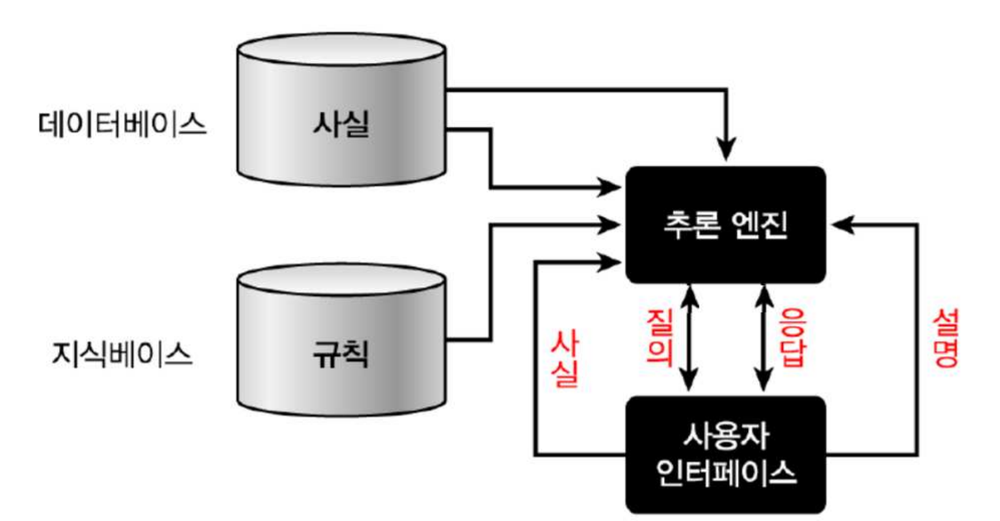
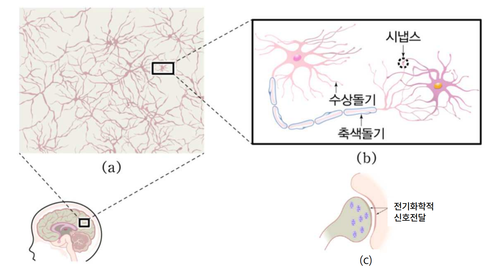
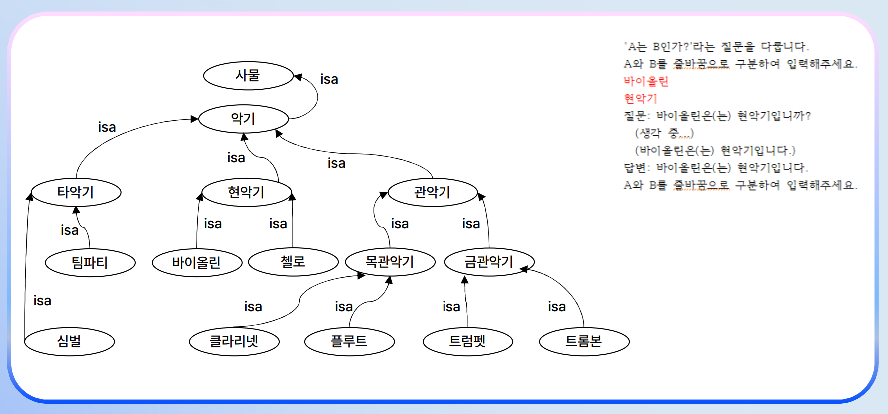

강의 부제 "머리를 털면!"의 의미는 뒤에 나옵니다. 사람의 머리를 털어도 한국말이 떨어지지 않듯, 지식은 어떤 부품에 담긴 게 아니라 시스템 전체의 작용임을 비유한 것입니다(2주차 시스템 응답과 연결).
| 수준 | 영어 | 의미 |
|---|---|---|
| 데이터 | Data | 재료. 컴퓨터는 원래 EDPS(Electronic Data Processing System) — 데이터 처리 장치 |
| 정보 | Information | 가공된 데이터. 정보가 다시 입력으로 쓰이면 그땐 데이터 역할 |
| 지식 | Knowledge | 알고 있는 것 — 체계적으로 잘 조직된 정보 덩어리 |
| 이론 | Theory | 여러 지식이 모여 형성 (예: 상대성 이론) |
| 원리 | Principle | 이론보다 더 일반적·상위 개념 (예: 불확정성 원리) |
초기 기호주의 인공지능은 지능을 만들려면 기호와 논리 처리만으로 충분할 거라고 봤지만, 실제로 잘 안 되더라는 것이 드러났습니다. 사람이 지능적으로 일을 처리하는 방식을 깊이 연구해 보니, 단순한 데이터 수준이 아니라 체계적이고 조직된 무언가를 처리해야 한다는 결론에 이르렀습니다 — 그것이 곧 지식(Knowledge)입니다.
1980~90년대 초반에 지식 표현 연구가 매우 활발하게 일어났습니다. 대표적으로 의미망(Semantic Net)과 규칙(Rule) 두 가지가 있습니다. 그 외에 프레임(Frame)·스크립트(Script) 등도 연구됐습니다.
예 — 악기에 관한 지식:
ISA(is-a) → 현악기ISA → 현악기HAS(has) → 현ISA → 악기DOES → 소리를 낸다이런 의미망 위에서 "첼로가 악기인가?"라는 질문을 받으면, 시스템이 첼로 → 현악기 → 악기의 연결을 추적해 "예"라고 답할 수 있습니다(추론). 강의에서는 반도체 소자 의미망 예시도 등장합니다 — RAM·ROM·SRAM·DRAM·PROM·플래시 메모리의 ISA 관계.

강의 영상 마지막에 등장하는 빈칸 채우기 — 핑크 단어가 정답입니다.
컴퓨터 같은 정보처리 장치는 데이터를 가공해서 정보를 생성한다. 즉, 컴퓨터에 전달하는 재료를 데이터라고 부르고 처리된 결과를 정보라고 부른다. 이렇게 생성된 정보가 다른 처리를 위해 입력으로 전달된다면 데이터가 되고 다시 정보를 생성한다. 가공된 데이터가 정보인 셈인데, 정보가 쌓여 체계를 갖추면 ( 지식 )이 되고, 더 높은 수준으로 추상화되어 이론과 원리로 발전한다.
전문가 시스템의 구성요소 중에서, 사용자 관점에서는 상호작용을 위한 사용자 인터페이스가 가장 중요하고, 특히 사용자 인터페이스는 추론한 것을 ( 설명 )하는 기능이 있어야 한다.
뉴런의 몸체는 핵, 다수의 ( 수상돌기 ), 하나의 ( 축색돌기 )로 구성되어 있으며 ( 시냅스 )는 다른 뉴런으로부터 입력을 받는 부위이고, ( 시냅스 )는 다른 뉴런으로 출력을 내보내는 부위이다. 뉴런은 ( 시냅스 )라 부르는 뉴런들 사이의 접합 부위를 통해서 생체 신호를 전달한다.